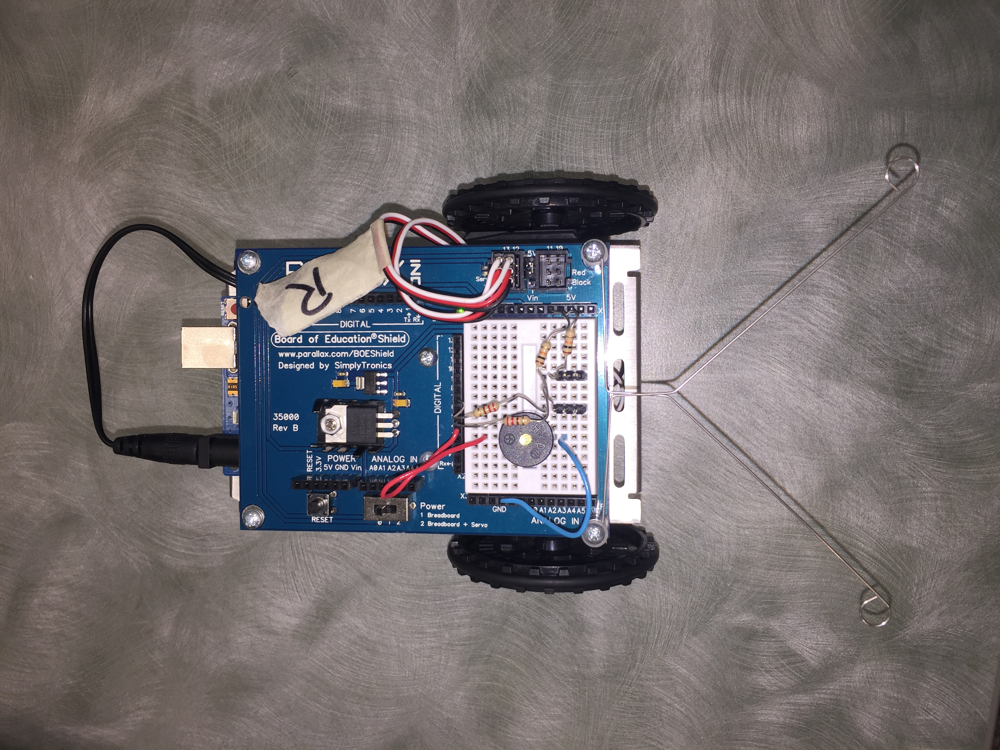
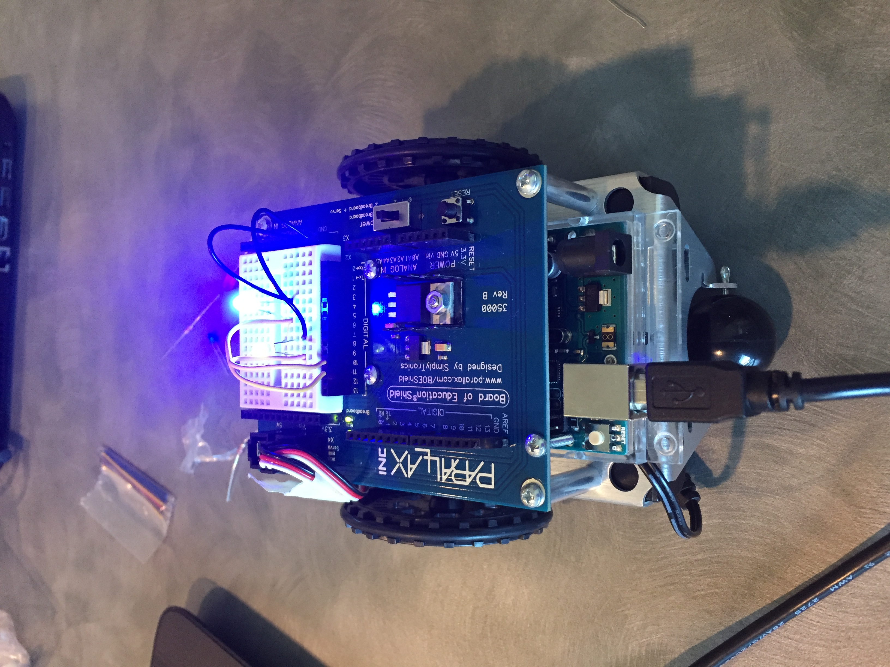

I was born on December 27, 2000 in El Camino Hospital. Growing up playing competitive tennis, I was determined to become a professional tennis player. My peak was when I was ranked #1 in the girl's division of Northen California. Then, I got tennis elbow and eventually quit competitive tennis. From this point on, I started trying new things such as basketball, swimming, joining the highschool tennis and badminton team, traveling to Japan by myself, making new friends, choosing to attend middle college, and joining the summer immersion Girl's Who Code program.
First, my partner and I started by making a poster on thde features of the game. We decided that we will create a game that the character "Gobo" has to jump from moving blocks strategically to get to the top. After we created the outline we started hands-on scratch and started creating the game. One conflict we had was to make Gobo jump. We learned from another group how this is possible and were able to achieve it by using a while block. One thing I enjoyed about making this game was to design the game. Creating the image in my head onto the screen is very satisfying to achieve. We are not completely done and I would definitely add to it if we had more time.


I learned that Scratch is mainly Python made easier to understand. For example, on Scratch, there is a multiplication sign, but in Python, it is *. Also, I noticed we learned about loops on both scratch and Python. Differences are that on Scratch, there are limits to what we can do because we can only use commands included in Scratch.
We faced many problems but we eventually pulled through all of them. One of the biggest problems we had was inputs. We were able to solve this by searching it up online and doing countless trials and errors.It felt great to be able to solve a problem after spending so much time on fixing it.
A list is a sequence of Python objects, basically in a list. It is used if there are multiple parts that could be changed. Fpr example, we used a list of RGB colors to change the colors of the pixels on a picture. Groups of people that have wide varieties of ideas and lots of knowledge work well together. The person with ideas could think of different ways a program could run. On the other hand, the person with a lot of knowledge could listen to the different ideas and put that into coding. This way, it is most efficient. I liked the obamicon project because I have seen filters on pictures like that before, but it was not as complicated as I imagined it to be.
Today I learned aboutcircuits. Learing about the terms from circuit was not as fun, but building on the robot hands- on was interesting. My idea of robotics changed because I have a clear understanding of what a robot is now. During class, I was confused if things such as sensors and siri was a robot. It makes me excited thinking about all the things robots can achieve in the future. One thing robots do not have are emotions and feelings, but if robots do in the future, I would be nervous because they are starting to become so human-like. Working in groups is better because there are four brains constributing to the project instead of one. Next time, hopefully we will know more about circuits so that we would not need to look up so many things online.
This week, we learned about robotics. First, we started with the basics by lighting up a LED light. Then we moved on to piezo, where we were able to make our machine play the Super Mario Theme Song. Lastly, today, we were able to code so that when our machine bumps into an obstacle, it will recognize it and change directions.
Here is the Youtube video to 5 LED lights lighting up in order:
Youtube video of LEDs

